代码版本控制系统
1.学习背景
当公司的服务器架构越来越复杂，需要频繁的发布新配置文件，以及新代码；
但是如果机器部署数量较多，发布的效率必然很低；
并且如果代码没有经过测试环境，预生产环境层层测试，最终才到生产环境，不经过测试的部署，会导致很严重的bug，因此必须要进行一定的代码测试。
因此从devops部署理念来看，任何一家单位都必须实现CICD（持续集成、持续交付）的理念，实现自动化代码集成、自动化代码部署。
目前主流的解决方案，学习的技术就是
- git
- jenkins
- gitlab
2.什么是devops开发流程
DevOps是一种实现Dev(开发)与Ops(运维)工作流有效联合的运维文化理念。
为什么要理解devops？
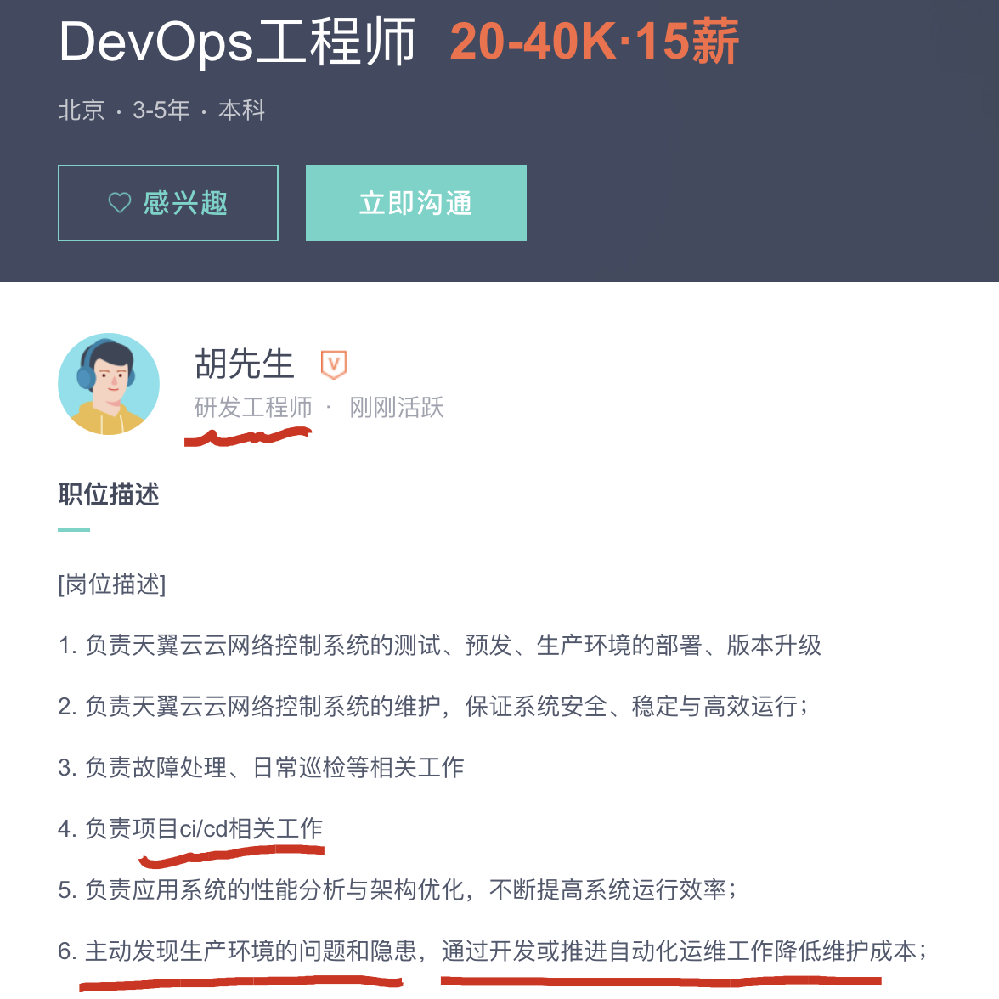
越是高级的运维，越是要了解开发与运维的有效结合工作，推进运维自动化工作，提升运维效率。
一个软件开发团队，会包括
项目经理，系统架构师、前端开发者，后端开发者，测试工程师，网络工程师，运维工程师等

如何让软件在开发、测试、运维及最终发布之间进行有效的流动，这就是DevOps所要关注的重点。
DevOps是一种文化，一种理念，是一种把开发（Dev）、测试（Test）、运维（Ops）及最终发布（CR）工作流进行联合的思想。
2.1 devops如何实践
- 所有环境和代码使用同一个仓库，将软件包纳入版本管理
- 团队共同决定发布流程
- 保持 DEV、TEST、PRODUCTION 环境的一致性
- 自动化回归测试，回归测试是指修改了旧代码后，重新进行测试以确认修改没有引入新的错误或导致其他代码产生错误。
- 小步提交，每日部署；而不是一次部署大量变更
- 更快、更频繁发布
3.版本控制系统
什么是“版本控制”？我为什么要关心它呢？
版本控制是一种记录一个或若干文件内容变化，以便将来查阅特定版本修订情况的系统。
3.1 你自己本地怎么管理文件？
许多人习惯用复制整个项目目录的方式来保存不同的版本，或许还会改名加上备份时间以示区别。
这么做唯一的好处就是简单，但是特别容易犯错。
有时候会混淆所在的工作目录，一不小心会写错文件或者覆盖意想外的文件。
如果你在学校写过毕业论文，那你一定遇见过这样的问题
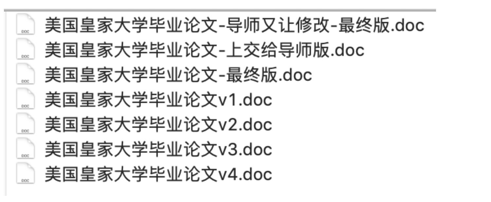
一个论文翻来覆去的改，写一点觉得有问题，写一点还觉得有问题，还不容易写好了，导师还挑刺，说这改的还不如上回，给改回去、、、
- 看着这一堆乱七八糟的文件，你自己也不记得，每一个文件到底写了什么内容，还得一个个看，想删又不敢删。。。
- 当你写完了毕业论文，你还得用U盘拷给导师，或者发个邮件给他，但是你回家可能还得改论文，那你发给导师的论文和你本地最新的论文又不一致了。。
于是这么多令人fuck指的操作，你就希望有没有一个软件
帮你记录文件变动的操作，并且同事还能一起操作，不需要自己传输文件，想知道变动了什么，只需要去软件里看看，这是不是很nb？
3.1.1 例如nginx配置文件的多人修改
如图，会发生什么结果？
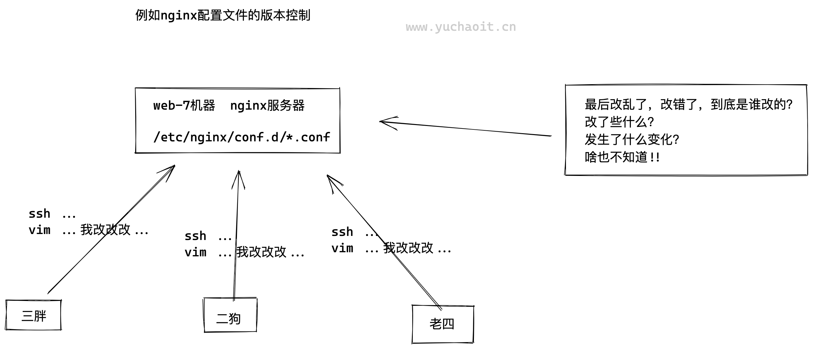
3.2 这个软件雏形？
对于文件使用版本号，日期的管理，这种方式比起没有版本管理好得多，但是也很臃肿，且他人不容易看得懂
| 版本 | 文件名 | 用户 | 说明 | 日期 |
|---|---|---|---|---|
| 1 | 美国皇家大学毕业论文v1.doc | yuchao | 论文初稿 | 7/12 10:38 |
| 2 | 美国皇家大学毕业论文v2.doc | yuchao | 论文修改版 | 7/12 18:09 |
| 3 | 美国皇家大学毕业论文v3.doc | Onlyu | 小于帮我修改论文 | 7/13 9:51 |
| 4 | 美国皇家大学毕业论文v4.doc | Wupeiqi | 武沛奇帮我修改论文 | 7/14 15:17 |
3.3 新式版本控制
现在的版本控制系统又是如何管理的，且还能实现快速回退功能。
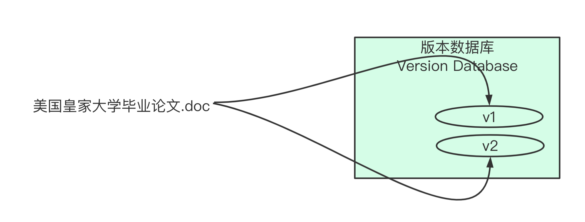
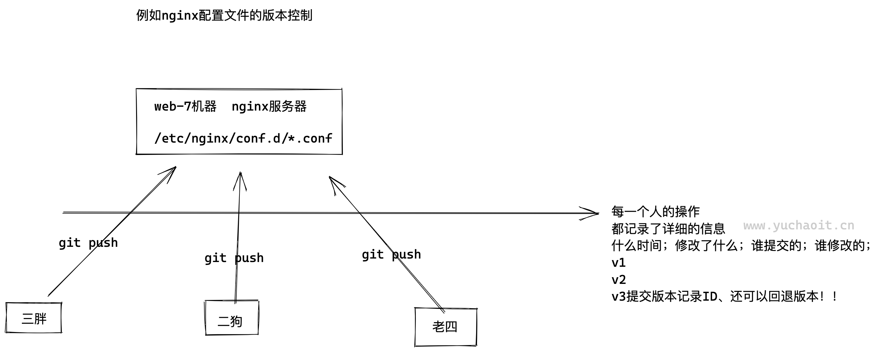
4.什么是集成(CI)
在实际软件开发中，常会有如下两种场景：
1.现在有一个电商平台需要开发，由于电商平台模块众多，此时就需要不同开发人员开发不同的模块，最红把所有人的代码都集中到一个系统中。
集成后对其进行部署上线。
2.随着时间的推移，无论是修复bug还是新功能开发，后续都要对系统进行不断的更新、迭代。

4.1 什么是持续集成（CI）
持续集成（Continuous integration ，CI）
持续集成就是在于”持续“两字，频繁的（一天多次）的将代码集成到主干(master)，重复如上的工作。
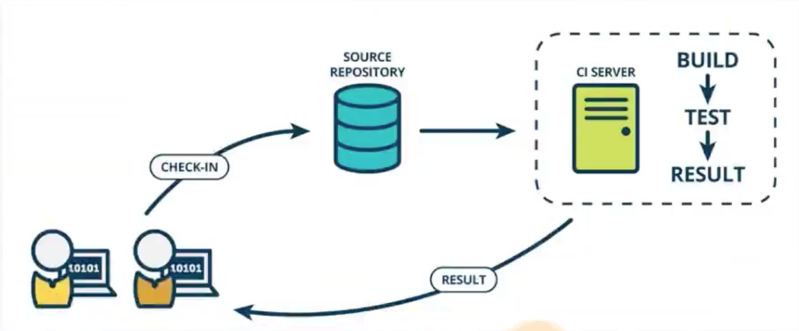
说白了就是你公司要部署一套系统，能支持，让所有的开发人员，都可以快速、集中式的提交代码，整合到一个主干线。
程序员本地写代码，通过git管理
↓推代码
git仓库，gitlab，github
↓仓库通知CI服务器，jenkins
jenkins执行脚本，如对代码编译，测试，运行
↓通知集成结果
这里属于第一道流水线的测试完毕。
4.2 使用持续集成好处
1.快速发现错误，每完成一点更新，就集成到主干，可以快速发现bug，也容易定位错误。
2.节省人力成本，省去手动反复部署操作
3.加快软件开发进程
4.实时交付
5.防止大幅度偏离主干，如果不经常集成，主干也在更新，会导致后续集成难度增大，或是难以集成。
4.3 不做CI行不行
行，如果你的规模太小，也就没必要部署这套系统了，写点部署脚本就完事了。
但是如果项目较大，且较复杂，需要不断的加新功能，或者升级产品，因此必须引入CI系统。
5.什么是持部署（CD）
Continuous Deployment，持续部署，产品从开始到结束诞生的产物，在服务器上健康运行。
持续交付指的是在持续集成(CI)的环境基础之上，将代码自动化部署到预生产环境。
- 持续集成，对代码进行集成测试
- 持续部署，对代码进行自动化部署
当你部署了一套基于 git + gitlab + jenkins + shell 的持续集成、持续部署系统之后
就可以实现快速的代码快速更新，快速发布，且因为经过了测试，保证了代码质量。
因为如果开发李四，写的新功能代码有bug，当你基于jenkins对代码测试之后，定位bug、通知程序修复bug，最终再整合最新的代码到master主线上。
这个自动化流程能极大提高生产级别的开发、测试、运维效率了。
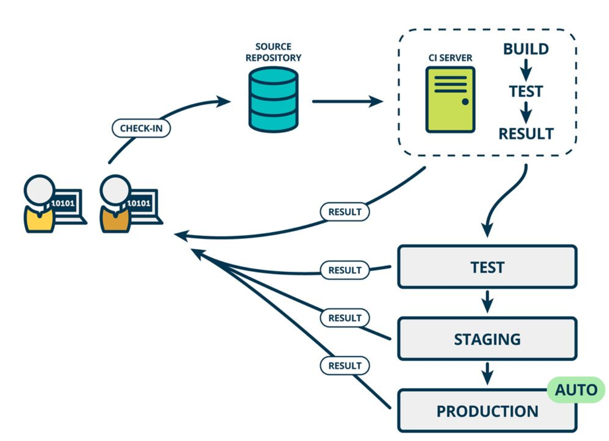
1. 程序员张三开发代码，git push 推送到 代码仓库
2. 开发老大，合并张三写的代码到master主线
3. 测试人员介入，进行代码的功能测试、白盒测试等
4. 代码测试验收完毕，运维基于jenkins实现代码部署到生产环境。
5.1 如何实现CD
当有人提交了代码，就自动的通知jenkins对代码进行构建 > 测试 > 确认代码可运行 > 构建到生产服务器
整个过程全自动化，但是有可能出现难以预料的问题
最好的是半自动化，使用持续交付（人工介入+jenkins发布），也不能过于自动化，容易翻车。
6.版本控制系统介绍
6.1 SVN
集中式版本控制系统，很老旧的技术公司会用。
Linus一直痛恨的CVS及SVN都是集中式的版本控制系统，而Git是分布式版本控制系统，集中式和分布式版本控制系统有什么区别呢？
先说集中式版本控制系统，版本库是集中存放在中央服务器的，而干活的时候，用的都是自己的电脑，所以要先从中央服务器取得最新的版本，然后开始干活，干完活了，再把自己的活推送给中央服务器。
中央服务器就好比是一个图书馆，你要改一本书，必须先从图书馆借出来，然后回到家自己改，改完了，再放回图书馆。
SubVersioN(SVN)
工作模式就是
1. 每一个人复制一份源码到本机修改
2. 各自修改完毕后，再一一合并为统一的源码
复制 > 修改 > 合并
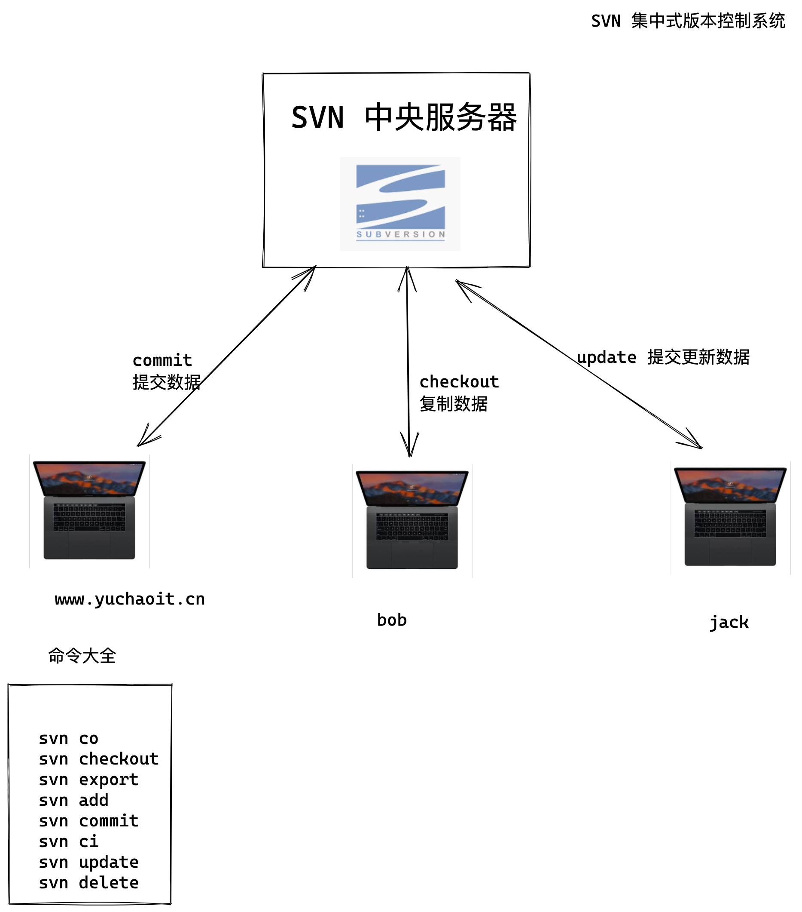
集中式版本控制，典型代表SVN
集中式版本控制系统最大的毛病就是必须联网才能工作，如果在局域网内还好，带宽够大，速度够快，可如果在互联网上，遇到网速慢的话，可能提交一个10M的文件就需要5分钟，这还不得把人给憋死啊。
而且如果SVN集中式仓库服务器挂了，所有人都再无法使用、提交、下载数据。
6.2 GIT 分布式版本控制系统
分布式版本控制，没有中央服务器的概念，每个人都有自己的版本库，因此每个人在工作时候，不需要联网，版本库本地即可管理。
既然每个人都是一个完整的版本库，同事之间如果需要协作开发，就需要找一个用于“交换文件”的中央服务器，这个服务器不存在也不影响大家干活，只是用于交换文件内容。
GIT最强大的功能还有分支管理，远甩SVN等软件。
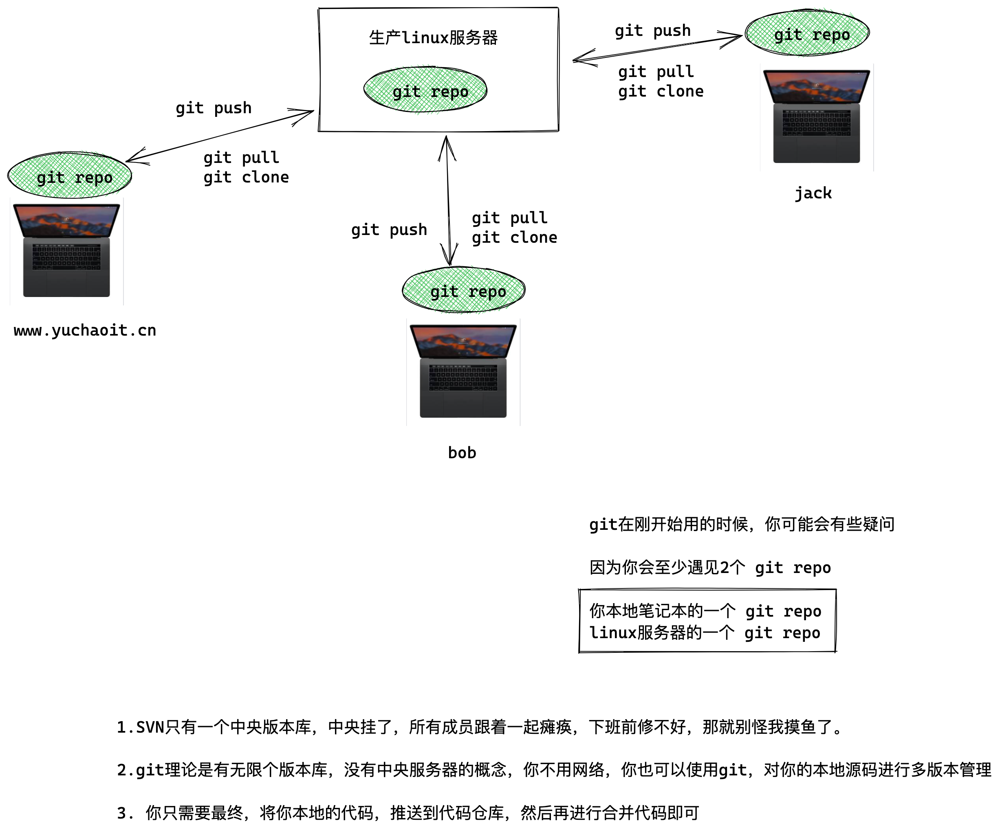
6.3 git特点
1. git是分布式的，特点是保存本地文件的元数据（meta data，文件属性等），将本地文件所有的的元信息，记录在git repo里的.git隐藏文件夹中。
2. git的使用可以不用网络，因为本地版本控制仓库就在你自己机器上，每一个人就是一个完成的版本库。
只不过是最终将你的本地仓库，作为一个分支，推送、合并到一个统一的线上代码仓库主干线即可，实现代码集成。
7.git软件安装
Git有多种方式使用
- 原生命令行，才能使用git所有命令，会git命令再去用gui图形工具，完全无压力
- GUI图形软件，只是实现了git的部分功能，以减免操作难度，难以记住git原生命令
- 不同的人会有不同的GUI图形工具，但是所有人用的git原生命令都一样，推荐学习命令
7.1 windows装git
https://git-scm.com/download/win
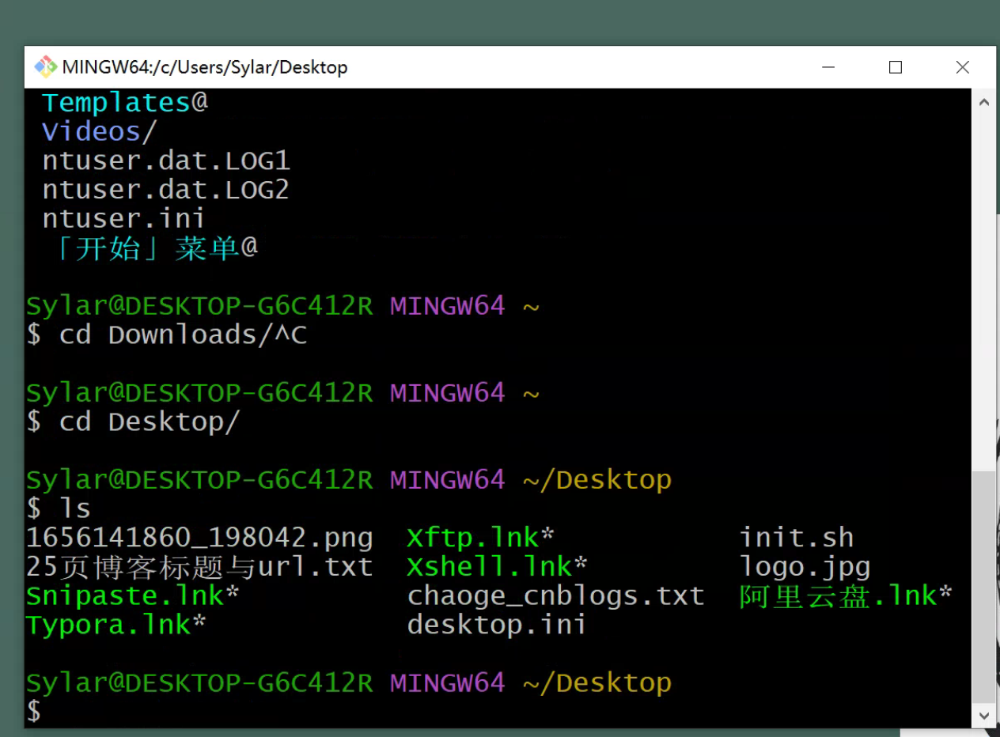
7.2 linux\macos
https://git-scm.com/download/
也是一样，下载安装即可
[root@cicd-99 ~]#yum install git -y
# 查看版本
root@cicd-99 ~]#git --version
git version 1.8.3.1
8.git身份设置
既然已经在系统上安装了 Git，你会想要做几件事来定制你的 Git 环境。 每台计算机上只需要配置一次，程序升级时会保留配置信息。 你可以在任何时候再次通过运行命令来修改它们。
回顾linux用户的概念
linux多用户，多任务
一台机器可以有多个用户登录，同时操作
因此就存在了不同的环境变量，用来区分，每个登录linux机器的用户
比如root用户的信息，在ls -a /root/
普通yuchao用户的信息，在 ls -a /home/yuchao
不同的用户登录后，linux加载不同的环境变量参数，对系统控制
Git 自带一个 git config 的工具来帮助设置控制 Git 外观和行为的配置变量。 这些变量存储在三个不同的位置：
这个用户指的是linux用户
三种环境参数
- --system
- --global
- --local
/etc/gitconfig文件: 包含系统上每一个用户及他们仓库的通用配置。 如果使用带有--system选项的git config时，它会从此文件读写配置变量。(针对任意登录该linux的用户都生效)~/.gitconfig或~/.config/git/config文件：只针对当前用户。 可以传递--global选项让 Git 读写此文件。(只针对当前登录系统的用户生效)- 当前使用仓库的 Git 目录中的
config文件（就是.git/config）：针对该仓库。--local当前仓库配置。（只针对某一个文件夹生效，例如/learn/linux/.git/config）
# 因为git是分布式版本控制系统，因为要区分出，到底是谁进行了版本管理，也就是提交的版本记录，都是有名字，有时间的
# 因此用git之前要先设置git的身份设置
git config --global user.name "pyyu"
git config --global user.email "yc_uuu@163.com"
git config --global color.ui true
列出git设置
[root@cicd-99 ~]#git config --list
user.name=pyyu
user.email=yc_uuu@163.com
color.ui=true
我们这里配置的是--global参数，因此是在用户家目录下，可以查看
[root@chaogelinux ~]# cat .gitconfig
[user]
name = pyyu
email = yc_uuu@163.com
[color]
ui = true
8.1 git身份设置命令集合
yum install git -y 安装git
git --version 查看git版本
git config --system --list 查看系统所有linux用户的通用配置,此命令检查/etc/gitconfig
git config --global --list 查看当前linux用户的配置，检查~/.gitconfig文件
git config --local --list 查看git目录中的仓库配置文件，.git/config文件
git config --global user.name "pyyu" 配置当前linux用户全局用户名，这台机器所有git仓库都会用这个配置
git config --global user.email "yc_uuu@163.com" 配置当前linux用户全局邮箱
git config --global color.ui true 配置git语法高亮显示
git config --list 列出git能找到的所有配置,从不同的文件中读取所有结果
git config user.name 列出git某一项配置
git help 获取git帮助
man git man手册
git help config 获取config命令的手册
9.git实践原理
git本地仓库，也就是一个文件夹，这个目录下的所有内容都被git工具管理，记录了所有文件的元数据。
你在这个本地仓库中所有对文件的修改，删除，都会被git记录下状态，便于历史记录跟踪，以及还原文件状态。
9.1 三个git使用的场景
你使用git会遇见这三个场景
9.2 本地已经写好了代码，需要用git去管理
cd /home/yuchao/my_shell/
git init # 初始化一个普通的目录为 git local repo
git init命令会创建一个.git隐藏子目录，这个目录包含初始化git仓库所有的核心文件。
此步仅仅是初始化，此时项目里的代码还没有被git跟踪，因此还需要git add对项目文件跟踪，然后git commit提交到local repo。
如果想知道git详细原理，请看
https://git-scm.com/book/zh/v2/ch00/ch10-git-internals
9.3 从零新建git本地仓库，编写代码
mkdir /home/yuchao/
[root@cicd-99 ~]#git init /home/yuchao/happy_linux
Initialized empty Git repository in /home/yuchao/happy_linux/.git/
此步会在当前路径创建happy_linux文件夹，happy_linux文件夹中包含了.git的初始化文件夹，所有配置
9.4 克隆远程仓库中的代码
国内的码云 gitee
国外的github
自建的私有仓库，gitlab
都是远程仓库
如果你想获取github上的代码，或者你公司gitlab私有仓库的代码，可以使用git clone命令，下载克隆远程仓库的代码。
git clone https://github.com/django/django.git
下载出来的代码已经是被git管理的本地仓库
你会发现所有的项目文件都在这里，等待后续开发
9.5 了解.git目录原理
[root@pyyuc ~/git_learning/mysite 11:08:19]#tree .git
.git
├── branches
├── config 这个项目独有的配置
├── description
├── HEAD head文件指示目前被检出的分支
├── hooks hooks目录包含服务端和客户端的钩子脚本 hook scripts
│ ├── applypatch-msg.sample
│ ├── commit-msg.sample
│ ├── post-update.sample
│ ├── pre-applypatch.sample
│ ├── pre-commit.sample
│ ├── prepare-commit-msg.sample
│ ├── pre-push.sample
│ ├── pre-rebase.sample
│ └── update.sample
├── index index文件保存暂存区的信息，只有git add之后才会生成，默认还没有这个文件
├── info info目录是全局性排除文件，用于放置不想被记录在.gitignore文件中的忽略模式（ignored patterns）
│ └── exclude
├── objects 存储所有数据内容
│ ├── info
│ └── pack
└── refs refs目录存储指向数据（分支）的提交对象的指针
├── heads
└── tags
.git文件夹解析
10.图解git工作流
git实现本地版本控制系统，设计三大分区
workspace 工作区（某文件夹）
Index/Stage/Cached 暂存区
Repository 本地仓库
Remote Repository 远程仓库（gitlab、github）
git的操控命令，就是在这四大工作区，来回切换的！！
还记得git的四个区域吗？本地文件夹，暂存区，本地仓库，远程仓库吗？
本地文件夹未初始化时，git是不认识的
本地文件夹 git init后，就成了git local repo 本地仓库
请记住，在工作文件夹的每一个文件，只有两种状态，一个是未跟踪，一个是已跟踪
已跟踪的指的是已经被纳入git版本管理的文件，在git快照中有他的记录
执行git add . 表示添加所有未被git跟踪的文件，用git进行跟踪状态
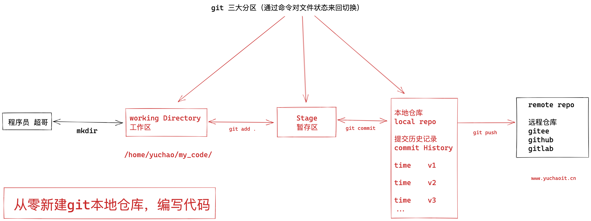
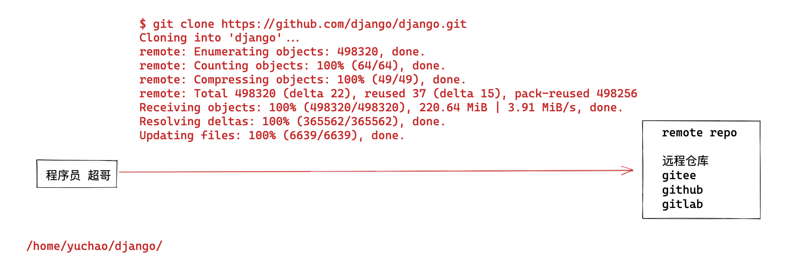
11.git命令实践
11.1 从零初始化git本地仓库
https://git-scm.com/docs/git-init/zh_HANS-CN
该命令创建一个空的Git存储库 - 本质上是一个 .git 目录
# 1. 创建工作区，且初始化一个git本地仓库，文件夹叫做learn_git
[root@www.yuchaoit.cn ~]#mkdir -p /home/yuchao/ && cd /home/yuchao/
[root@www.yuchaoit.cn /home/yuchao]#
[root@www.yuchaoit.cn /home/yuchao]#
[root@www.yuchaoit.cn /home/yuchao]#
[root@www.yuchaoit.cn /home/yuchao]#git init learn_git
Initialized empty Git repository in /home/yuchao/learn_git/.git/
[root@www.yuchaoit.cn /home/yuchao]#
[root@www.yuchaoit.cn /home/yuchao]#tree
.
└── learn_git
1 directory, 0 files
11.2 查看暂存区
暂存区(stage或index): 也叫缓存区
暂存区就看作是一个缓区区域，临时保存你的改动。
如果在工作目录创建了一个新文件，需要将新文件添加到暂存区。
创建新文件，添加到暂存区
# 1. 生成新文件
[root@www.yuchaoit.cn /home/yuchao]## 进入到本地仓库
[root@www.yuchaoit.cn /home/yuchao]#cd /home/yuchao/learn_git
[root@www.yuchaoit.cn /home/yuchao/learn_git]#
[root@www.yuchaoit.cn /home/yuchao/learn_git]## 此时这个文件还未被git管理
[root@www.yuchaoit.cn /home/yuchao/learn_git]#echo "加油努力干，攒钱买房买车娶媳妇！！" > jiayou.sh
[root@www.yuchaoit.cn /home/yuchao/learn_git]#
[root@www.yuchaoit.cn /home/yuchao/learn_git]## 查看文件状态
[root@www.yuchaoit.cn /home/yuchao/learn_git]#
[root@www.yuchaoit.cn /home/yuchao/learn_git]#git status
# On branch master
#
# Initial commit
#
# Untracked files:
# (use "git add <file>..." to include in what will be committed)
#
# jiayou.sh
nothing added to commit but untracked files present (use "git add" to track)
此时该文件，是还未被跟踪的状态
使用git add命令，提交该文件到暂存区，且进行跟踪（逆向操作，git rm --cached jiayou.sh ）
[root@www.yuchaoit.cn /home/yuchao/learn_git]#git add jiayou.sh
[root@www.yuchaoit.cn /home/yuchao/learn_git]#
[root@www.yuchaoit.cn /home/yuchao/learn_git]#git status
# On branch master
#
# Initial commit
#
# Changes to be committed:
# (use "git rm --cached <file>..." to unstage)
#
# new file: jiayou.sh
#
此时查看.git文件夹中多了一个index文件，就是暂存区文件
[root@www.yuchaoit.cn /home/yuchao/learn_git]#file .git/index
.git/index: Git index, version 2, 1 entries
可以用strings命令查看该文件数据，已经记录了jiayou.sh
[root@www.yuchaoit.cn /home/yuchao/learn_git]#strings .git/index
DIRC
O?Cb
jiayou.sh
11.3 从暂存区移除文件
[root@www.yuchaoit.cn /home/yuchao/learn_git]#echo "坚持下去，才会开花结果！！" >> jianchi.sh
[root@www.yuchaoit.cn /home/yuchao/learn_git]#git add .
[root@www.yuchaoit.cn /home/yuchao/learn_git]#
[root@www.yuchaoit.cn /home/yuchao/learn_git]#strings .git/index
DIRC
!gLb
jianchi.sh
O?Cb
jiayou.sh
Daw)
从暂存区移除该俩2文件的记录，也就是取消用git去跟踪管理
[root@www.yuchaoit.cn /home/yuchao/learn_git]#git status
# On branch master
#
# Initial commit
#
# Changes to be committed:
# (use "git rm --cached <file>..." to unstage)
#
# new file: jianchi.sh
# new file: jiayou.sh
[root@www.yuchaoit.cn /home/yuchao/learn_git]#git rm --cached jia*
rm 'jianchi.sh'
rm 'jiayou.sh'
[root@www.yuchaoit.cn /home/yuchao/learn_git]#
[root@www.yuchaoit.cn /home/yuchao/learn_git]#
[root@www.yuchaoit.cn /home/yuchao/learn_git]#git status
# On branch master
#
# Initial commit
#
# Untracked files:
# (use "git add <file>..." to include in what will be committed)
#
# jianchi.sh
# jiayou.sh
nothing added to commit but untracked files present (use "git add" to track)
再次查看index暂存区信息
[root@www.yuchaoit.cn /home/yuchao/learn_git]#strings .git/index
DIRC
11.4 重新跟踪、提交文件
[root@www.yuchaoit.cn /home/yuchao/learn_git]#
[root@www.yuchaoit.cn /home/yuchao/learn_git]#git status
# On branch master
#
# Initial commit
#
# Untracked files:
# (use "git add <file>..." to include in what will be committed)
#
# jianchi.sh
# jiayou.sh
nothing added to commit but untracked files present (use "git add" to track)
[root@www.yuchaoit.cn /home/yuchao/learn_git]#
[root@www.yuchaoit.cn /home/yuchao/learn_git]#
# 提交文件从工作区 > 暂存区，进行git跟踪状态
[root@www.yuchaoit.cn /home/yuchao/learn_git]#git add .
11.5 查看文件状态
git status 命令可以查看工作区里有哪些文件需要被提交，以及是否被git跟踪
[root@www.yuchaoit.cn /home/yuchao/learn_git]#git status
# On branch master
#
# Initial commit
#
# Changes to be committed:
# (use "git rm --cached <file>..." to unstage)
#
# new file: jianchi.sh
# new file: jiayou.sh
#
11.6 基于git的文件重命名
目前我们已经发现，在git的工作区中操作，会有2个状态
1是未被git追踪的文件
2是被git追踪的文件（记录到暂存区了）
那么你如果直接修改文件名，就得注意，是否被git追踪了，以及如何正确的玩法。
错误玩法
用mv去改，你会发现这原本被git追踪的文件jiayou.sh
通过mv改名，git其实是先删除了该文件，然后又重新创建了未被git跟踪的文件jiayou2.sh
但是别忘了jiayou.sh 还在index暂存区中。。。我擦，这咋整？
所以在git本地仓库中的操作，还是需要一定理解的。
执行如下2个操作
- 删除暂存区中的jiayou.sh
- 添加jiayou2.sh到暂存区
[root@www.yuchaoit.cn /home/yuchao/learn_git]#git rm --cached jiayou.sh
rm 'jiayou.sh'
[root@www.yuchaoit.cn /home/yuchao/learn_git]#git status
# On branch master
#
# Initial commit
#
# Changes to be committed:
# (use "git rm --cached <file>..." to unstage)
#
# new file: jianchi.sh
#
# Untracked files:
# (use "git add <file>..." to include in what will be committed)
#
# jiayou2.sh
[root@www.yuchaoit.cn /home/yuchao/learn_git]#
[root@www.yuchaoit.cn /home/yuchao/learn_git]#git add jiayou2.sh
[root@www.yuchaoit.cn /home/yuchao/learn_git]#
[root@www.yuchaoit.cn /home/yuchao/learn_git]#
[root@www.yuchaoit.cn /home/yuchao/learn_git]#git status
# On branch master
#
# Initial commit
#
# Changes to be committed:
# (use "git rm --cached <file>..." to unstage)
#
# new file: jianchi.sh
# new file: jiayou2.sh
#
现在这俩文件，都已经在暂存区，等待commit 提交到 local repo了。
正确玩法
[root@www.yuchaoit.cn /home/yuchao/learn_git]#git mv jiayou2.sh jiajiayou.sh
[root@www.yuchaoit.cn /home/yuchao/learn_git]#
[root@www.yuchaoit.cn /home/yuchao/learn_git]#
[root@www.yuchaoit.cn /home/yuchao/learn_git]#git status
# On branch master
#
# Initial commit
#
# Changes to be committed:
# (use "git rm --cached <file>..." to unstage)
#
# new file: jiajiayou.sh
# new file: jianchi.sh
#
11.7 基于git的删除文件
错误删除
暂存区里现在有俩文件数据
[root@www.yuchaoit.cn /home/yuchao/learn_git]#ll
total 8
-rw-r--r-- 1 root root 52 Jul 6 18:11 jiajiayou.sh
-rw-r--r-- 1 root root 40 Jul 6 18:11 jianchi.sh
[root@www.yuchaoit.cn /home/yuchao/learn_git]#git status
# On branch master
#
# Initial commit
#
# Changes to be committed:
# (use "git rm --cached <file>..." to unstage)
#
# new file: jiajiayou.sh
# new file: jianchi.sh
#
直接rm删除试试？
[root@www.yuchaoit.cn /home/yuchao/learn_git]#rm -rf jia*
[root@www.yuchaoit.cn /home/yuchao/learn_git]#
[root@www.yuchaoit.cn /home/yuchao/learn_git]#ls
[root@www.yuchaoit.cn /home/yuchao/learn_git]#
[root@www.yuchaoit.cn /home/yuchao/learn_git]#
[root@www.yuchaoit.cn /home/yuchao/learn_git]#
[root@www.yuchaoit.cn /home/yuchao/learn_git]#git status
# On branch master
#
# Initial commit
#
# Changes to be committed:
# (use "git rm --cached <file>..." to unstage)
#
# new file: jiajiayou.sh
# new file: jianchi.sh
#
# Changes not staged for commit:
# (use "git add/rm <file>..." to update what will be committed)
# (use "git checkout -- <file>..." to discard changes in working directory)
#
# deleted: jiajiayou.sh
# deleted: jianchi.sh
这俩文件，只要还存在暂存区，就可以恢复
[root@www.yuchaoit.cn /home/yuchao/learn_git]#git checkout -- jia*
[root@www.yuchaoit.cn /home/yuchao/learn_git]#
[root@www.yuchaoit.cn /home/yuchao/learn_git]#ls
jiajiayou.sh jianchi.sh
正确删除
也就是，这个文件，的确不想要了，从暂存区移除追踪记录
[root@www.yuchaoit.cn /home/yuchao/learn_git]#git rm --cached jia*
rm 'jiajiayou.sh'
rm 'jianchi.sh'
[root@www.yuchaoit.cn /home/yuchao/learn_git]#
[root@www.yuchaoit.cn /home/yuchao/learn_git]#ll
total 8
-rw-r--r-- 1 root root 52 Jul 6 18:13 jiajiayou.sh
-rw-r--r-- 1 root root 40 Jul 6 18:13 jianchi.sh
[root@www.yuchaoit.cn /home/yuchao/learn_git]#
[root@www.yuchaoit.cn /home/yuchao/learn_git]#
[root@www.yuchaoit.cn /home/yuchao/learn_git]#git status
# On branch master
#
# Initial commit
#
# Untracked files:
# (use "git add <file>..." to include in what will be committed)
#
# jiajiayou.sh
# jianchi.sh
nothing added to commit but untracked files present (use "git add" to track)
[root@www.yuchaoit.cn /home/yuchao/learn_git]#
此时再删除，就彻底没了
[root@www.yuchaoit.cn /home/yuchao/learn_git]#rm -f jia*
[root@www.yuchaoit.cn /home/yuchao/learn_git]#
[root@www.yuchaoit.cn /home/yuchao/learn_git]#git status
# On branch master
#
# Initial commit
#
nothing to commit (create/copy files and use "git add" to track)
[root@www.yuchaoit.cn /home/yuchao/learn_git]#
[root@www.yuchaoit.cn /home/yuchao/learn_git]#ls
11.8 提交暂存区数据到local repo
练一练，完整的提交版本记录的操作
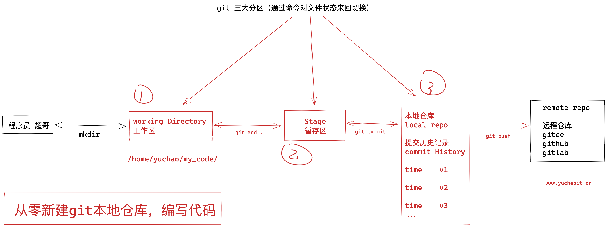
提交v1版本
我们目前，都只是在 工作区，和暂存区 进行玩耍
git commit 可以提交暂存区的临时数据，放入local repo，提交为第一个版本
[root@www.yuchaoit.cn /home/yuchao/learn_git]#echo '加油啊兄弟们，胜利的曙光就要看到了！！' > laoliu.sh
[root@www.yuchaoit.cn /home/yuchao/learn_git]#git status
# On branch master
#
# Initial commit
#
# Untracked files:
# (use "git add <file>..." to include in what will be committed)
#
# laoliu.sh
nothing added to commit but untracked files present (use "git add" to track)
[root@www.yuchaoit.cn /home/yuchao/learn_git]#git add .
[root@www.yuchaoit.cn /home/yuchao/learn_git]#
[root@www.yuchaoit.cn /home/yuchao/learn_git]#
[root@www.yuchaoit.cn /home/yuchao/learn_git]#git status
# On branch master
#
# Initial commit
#
# Changes to be committed:
# (use "git rm --cached <file>..." to unstage)
#
# new file: laoliu.sh
#
[root@www.yuchaoit.cn /home/yuchao/learn_git]#
[root@www.yuchaoit.cn /home/yuchao/learn_git]#
[root@www.yuchaoit.cn /home/yuchao/learn_git]#git commit -m 'first commit with line 1'
[master (root-commit) fb118ba] first commit with line 1
1 file changed, 1 insertion(+)
create mode 100644 laoliu.sh
[root@www.yuchaoit.cn /home/yuchao/learn_git]#
[root@www.yuchaoit.cn /home/yuchao/learn_git]#
[root@www.yuchaoit.cn /home/yuchao/learn_git]#
[root@www.yuchaoit.cn /home/yuchao/learn_git]#git log
commit fb118ba9639431c32f1a1f22bff8e4b0ddaac1cb
Author: pyyu <yc_uuu@163.com>
Date: Wed Jul 6 18:40:02 2022 +0800
first commit with line 1
此时再用git status啥也看不到了，干净的工作区
[root@www.yuchaoit.cn /home/yuchao/learn_git]#git status
# On branch master
nothing to commit, working directory clean
提交v2版本
[root@www.yuchaoit.cn /home/yuchao/learn_git]#cat laoliu.sh
加油啊兄弟们，胜利的曙光就要看到了！！
好的超哥，我一定相信自己，加油努力，给自己一个满意的结果！！
git已经发现文件内容被修改了
[root@www.yuchaoit.cn /home/yuchao/learn_git]#
[root@www.yuchaoit.cn /home/yuchao/learn_git]#git status
# On branch master
# Changes not staged for commit:
# (use "git add <file>..." to update what will be committed)
# (use "git checkout -- <file>..." to discard changes in working directory)
#
# modified: laoliu.sh
#
no changes added to commit (use "git add" and/or "git commit -a")
用git diff看看文件内容区别
[root@www.yuchaoit.cn /home/yuchao/learn_git]#git diff laoliu.sh
diff --git a/laoliu.sh b/laoliu.sh
index 5018c92..b736bb6 100644
--- a/laoliu.sh
+++ b/laoliu.sh
@@ -1 +1,2 @@
加油啊兄弟们，胜利的曙光就要看到了！！
+好的超哥，我一定相信自己，加油努力，给自己一个满意的结果！！
+号开头，表示这一行是新增的内容
提交v2版本，提交第二个commit记录，每一次commit 都会有id记录
记住，先git add，提交到暂存区，然后再commit，到本地仓库
[root@www.yuchaoit.cn /home/yuchao/learn_git]#git add .
[root@www.yuchaoit.cn /home/yuchao/learn_git]#
[root@www.yuchaoit.cn /home/yuchao/learn_git]#git status
# On branch master
# Changes to be committed:
# (use "git reset HEAD <file>..." to unstage)
#
# modified: laoliu.sh
#
[root@www.yuchaoit.cn /home/yuchao/learn_git]#
[root@www.yuchaoit.cn /home/yuchao/learn_git]#git commit -m 'v2 添加了第二行数据'
[master 9a3bd4d] v2 添加了第二行数据
1 file changed, 1 insertion(+)
[root@www.yuchaoit.cn /home/yuchao/learn_git]#
[root@www.yuchaoit.cn /home/yuchao/learn_git]#git log
commit 9a3bd4d40480749247e4c784a24fb13cb0fb0120
Author: pyyu <yc_uuu@163.com>
Date: Wed Jul 6 18:46:34 2022 +0800
v2 添加了第二行数据
commit fb118ba9639431c32f1a1f22bff8e4b0ddaac1cb
Author: pyyu <yc_uuu@163.com>
Date: Wed Jul 6 18:40:02 2022 +0800
first commit with line 1
因此，通过 git log 可以查看到每一次的提交记录。
提交v3版本
[root@www.yuchaoit.cn /home/yuchao/learn_git]#cat laoliu.sh
加油啊兄弟们，胜利的曙光就要看到了！！
好的超哥，我一定相信自己，加油努力，给自己一个满意的结果！！
兄弟们，git工具，一般是开发人员用的多，我们运维一般也就是上传，下载代码而已了。
[root@www.yuchaoit.cn /home/yuchao/learn_git]#
[root@www.yuchaoit.cn /home/yuchao/learn_git]#
[root@www.yuchaoit.cn /home/yuchao/learn_git]#git status
# On branch master
# Changes not staged for commit:
# (use "git add <file>..." to update what will be committed)
# (use "git checkout -- <file>..." to discard changes in working directory)
#
# modified: laoliu.sh
#
no changes added to commit (use "git add" and/or "git commit -a")
[root@www.yuchaoit.cn /home/yuchao/learn_git]#
添加，提交
[root@www.yuchaoit.cn /home/yuchao/learn_git]#git commit -m 'v3 就玩三次吧'
[master e9547df] v3 就玩三次吧
1 file changed, 2 insertions(+)
[root@www.yuchaoit.cn /home/yuchao/learn_git]#
[root@www.yuchaoit.cn /home/yuchao/learn_git]#
[root@www.yuchaoit.cn /home/yuchao/learn_git]#
[root@www.yuchaoit.cn /home/yuchao/learn_git]#git status
# On branch master
nothing to commit, working directory clean
[root@www.yuchaoit.cn /home/yuchao/learn_git]#
git命令小结
1. 创建文件数据
2. git add 文件名 追踪文件，添加到暂存区
3. git status 查看工作区的文件状态
4. git diff 文件名 查看文件修改的对比情况
5. git commit -m '提交注释' 提交暂存区的内容到本地仓库
6. 结束第一次版本提交
7. 多次commit 提交，就存在了多次版本记录，git 可以实现版本回退功能
12.git版本历史
在我们使用git的时候，会对代码文件不停的修改，不断的提交到代码仓库。
这个就如同我们打游戏时候，保存关卡记录的操作。

在打boss之前，先做一个存档，防止你这个渣渣，被boss一招秒杀，又得从头再来。。。。。
因此被boss弄死，可以从存档，重新开始游戏。。。。
12.1 git log
当你的代码写好了一部分功能，就可以保存一个"存档"，这个存档操作就是git commit，如果代码出错，可以随时回到"存档"记录
查看"存档"记录，查看commit提交记录的命令 git log
我们可以吧git commit操作与虚拟机的快照做对比理解，简单理解就是每次commit，就等于我们对代码仓库做了一个快照。
可以演示下vmware快照
那么我们如何知道文件快照了多少次呢？
git log命令显示，从最新的commit记录到最远的记录顺序。
git log --oneline 一行显示git记录
git log --oneline --all 一行显示所有分支git记录
git log --oneline --all -4 --graph 显示所有分支的版本演进的最近4条
git log -4 显示最近4条记录
git log --all 显示所有分支的commit信息
git branch -v 查看分支信息
git help --web log 以浏览器界面显示log的参数
12.2 查看提交版本历史
1, 使用git log查看提交的历史版本信息
[root@www.yuchaoit.cn /home/yuchao/learn_git]#git log
commit e9547dfc7aa124564bb962031b08053d127d5d6b
Author: pyyu <yc_uuu@163.com>
Date: Wed Jul 6 18:49:34 2022 +0800
v3 就玩三次吧
commit 9a3bd4d40480749247e4c784a24fb13cb0fb0120
Author: pyyu <yc_uuu@163.com>
Date: Wed Jul 6 18:46:34 2022 +0800
v2 添加了第二行数据
commit fb118ba9639431c32f1a1f22bff8e4b0ddaac1cb
Author: pyyu <yc_uuu@163.com>
Date: Wed Jul 6 18:40:02 2022 +0800
first commit with line 1
[root@www.yuchaoit.cn /home/yuchao/learn_git]#git log --oneline
e9547df v3 就玩三次吧
9a3bd4d v2 添加了第二行数据
fb118ba first commit with line 1
查看最新2条日志
[root@www.yuchaoit.cn /home/yuchao/learn_git]#git log -2 --oneline
e9547df v3 就玩三次吧
9a3bd4d v2 添加了第二行数据
前面的字符串，就是commit 版本提交记录ID
12.3 git版本回退
学到这里，超哥想起来那年十八岁，听着周董的《回到过去》。。
我们已知git commit可以提交代码到本地仓库，如同虚拟机的快照，当也可以进行版本回退。
git log可以查看历史版本记录
git reset --hard命令可以回退版本
git reset --hard HEAD^ 回退到上个版本
HEAD表示当前版版本
HEAD^ 表示上1个版本
HEAD^^ 上2个版本
也可以直接git reset --hard 版本id号
这个时候就发现，git commit -m 所标记的注释信息非常重要了吧，可以让你自己知道到底回退到什么版本
回退上一个版本，回到v2
[root@www.yuchaoit.cn /home/yuchao/learn_git]#cat laoliu.sh
加油啊兄弟们，胜利的曙光就要看到了！！
好的超哥，我一定相信自己，加油努力，给自己一个满意的结果！！
兄弟们，git工具，一般是开发人员用的多，我们运维一般也就是上传，下载代码而已了。
[root@www.yuchaoit.cn /home/yuchao/learn_git]#git reset --hard HEAD^
HEAD is now at 9a3bd4d v2 添加了第二行数据
[root@www.yuchaoit.cn /home/yuchao/learn_git]#
[root@www.yuchaoit.cn /home/yuchao/learn_git]#
[root@www.yuchaoit.cn /home/yuchao/learn_git]#cat laoliu.sh
加油啊兄弟们，胜利的曙光就要看到了！！
好的超哥，我一定相信自己，加油努力，给自己一个满意的结果！！
再回到第一个v1版本
[root@www.yuchaoit.cn /home/yuchao/learn_git]#git reset --hard HEAD^
HEAD is now at fb118ba first commit with line 1
[root@www.yuchaoit.cn /home/yuchao/learn_git]#cat laoliu.sh
加油啊兄弟们，胜利的曙光就要看到了！！
我还想回到v3版本咋办
git reflog可以看到所有的git操作历史，也就可以看到commit版本记录的id了。
[root@www.yuchaoit.cn /home/yuchao/learn_git]#git reflog
fb118ba HEAD@{0}: reset: moving to HEAD^
9a3bd4d HEAD@{1}: reset: moving to HEAD^
e9547df HEAD@{2}: commit: v3 就玩三次吧
9a3bd4d HEAD@{3}: commit: v2 添加了第二行数据
fb118ba HEAD@{4}: commit (initial): first commit with line 1
回到v3版本，基于commit即可
[root@www.yuchaoit.cn /home/yuchao/learn_git]#cat laoliu.sh
加油啊兄弟们，胜利的曙光就要看到了！！
[root@www.yuchaoit.cn /home/yuchao/learn_git]#git reflog
fb118ba HEAD@{0}: reset: moving to HEAD^
9a3bd4d HEAD@{1}: reset: moving to HEAD^
e9547df HEAD@{2}: commit: v3 就玩三次吧
9a3bd4d HEAD@{3}: commit: v2 添加了第二行数据
fb118ba HEAD@{4}: commit (initial): first commit with line 1
[root@www.yuchaoit.cn /home/yuchao/learn_git]#
[root@www.yuchaoit.cn /home/yuchao/learn_git]#
[root@www.yuchaoit.cn /home/yuchao/learn_git]#git reset --hard e9547df
HEAD is now at e9547df v3 就玩三次吧
[root@www.yuchaoit.cn /home/yuchao/learn_git]#
[root@www.yuchaoit.cn /home/yuchao/learn_git]#
[root@www.yuchaoit.cn /home/yuchao/learn_git]#git reflog
e9547df HEAD@{0}: reset: moving to e9547df
fb118ba HEAD@{1}: reset: moving to HEAD^
9a3bd4d HEAD@{2}: reset: moving to HEAD^
e9547df HEAD@{3}: commit: v3 就玩三次吧
9a3bd4d HEAD@{4}: commit: v2 添加了第二行数据
fb118ba HEAD@{5}: commit (initial): first commit with line 1
[root@www.yuchaoit.cn /home/yuchao/learn_git]#
[root@www.yuchaoit.cn /home/yuchao/learn_git]#
[root@www.yuchaoit.cn /home/yuchao/learn_git]#git log --oneline
e9547df v3 就玩三次吧
9a3bd4d v2 添加了第二行数据
fb118ba first commit with line 1
[root@www.yuchaoit.cn /home/yuchao/learn_git]#
[root@www.yuchaoit.cn /home/yuchao/learn_git]#
[root@www.yuchaoit.cn /home/yuchao/learn_git]#
[root@www.yuchaoit.cn /home/yuchao/learn_git]#cat laoliu.sh
加油啊兄弟们，胜利的曙光就要看到了！！
好的超哥，我一定相信自己，加油努力，给自己一个满意的结果！！
兄弟们，git工具，一般是开发人员用的多，我们运维一般也就是上传，下载代码而已了。
12.4 git log总结
git log 原理图
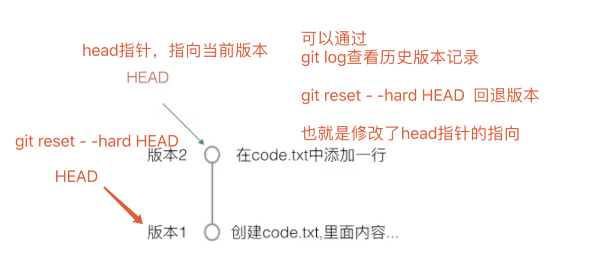
- 提交后的代码文件，使用
git log查看当前版本及以前的历史版本。 - 使用
git reset --hard HEAD^或者git reset --hard HEAD^^实现版本回退。 - 使用
git reflog查看提交的所有操作及版本号 - 使用
git reset --hard 版本号你可以自由的在不同版本之间来回切换。
git版本控制不仅仅是用于项目开发，你也可以用于一个软件包仓库的版本控制。
也可以是你电脑的资料管理，只要是文件就可以管理。
13.git撤销功能
今天于超老师写代码时，心情不太好，写了一堆bug，咋整？
有没有后悔药？有 git checkout命令
写代码搞起
[root@www.yuchaoit.cn /home/yuchao/learn_git]#cat hello.sh
echo "练一练git撤销命令?"
[root@www.yuchaoit.cn /home/yuchao/learn_git]#
[root@www.yuchaoit.cn /home/yuchao/learn_git]#git add .
[root@www.yuchaoit.cn /home/yuchao/learn_git]#
[root@www.yuchaoit.cn /home/yuchao/learn_git]#
[root@www.yuchaoit.cn /home/yuchao/learn_git]#git commit -m 'v1 hello.sh'
[master 049a22f] v1 hello.sh
1 file changed, 1 insertion(+)
create mode 100644 hello.sh
故意写错
[root@www.yuchaoit.cn /home/yuchao/learn_git]#cat hello.sh
echo "练一练git撤销命令?"
你瞅啥？给你邦邦两拳！
[root@www.yuchaoit.cn /home/yuchao/learn_git]#
[root@www.yuchaoit.cn /home/yuchao/learn_git]#git status
# On branch master
# Changes not staged for commit:
# (use "git add <file>..." to update what will be committed)
# (use "git checkout -- <file>..." to discard changes in working directory)
#
# modified: hello.sh
#
no changes added to commit (use "git add" and/or "git commit -a")
撤销的多种情况
直接删除就行，但是如果内容太多，你摸不清发生啥了呢？就没办法了
使用
git checkout -- 文件名就可以直接撤销修改了如果写乱了代码，添加暂存区但还没有commit提交。使用
git reset HEAD 文件名取消暂存区添加，再git checkout -- 文件名来撤销修改如果写乱了代码，添加暂存区并提交了。则使用版本回退
我们这里，还未添加到暂存区，直接撤销
[root@www.yuchaoit.cn /home/yuchao/learn_git]#git checkout -- hello.sh
[root@www.yuchaoit.cn /home/yuchao/learn_git]#
[root@www.yuchaoit.cn /home/yuchao/learn_git]#cat hello.sh
echo "练一练git撤销命令?"
14.git版本控制总结
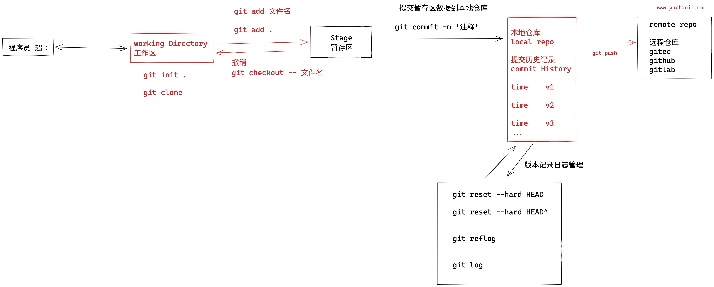